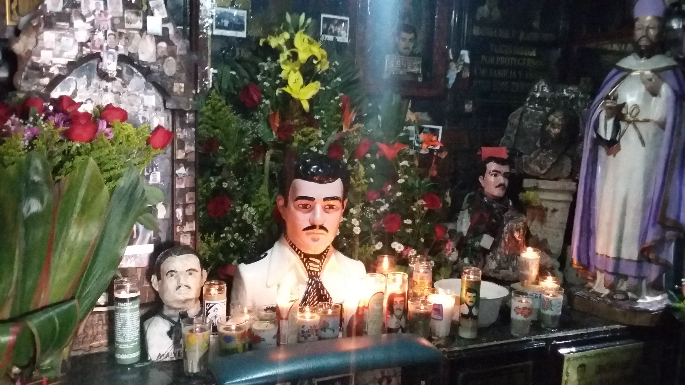
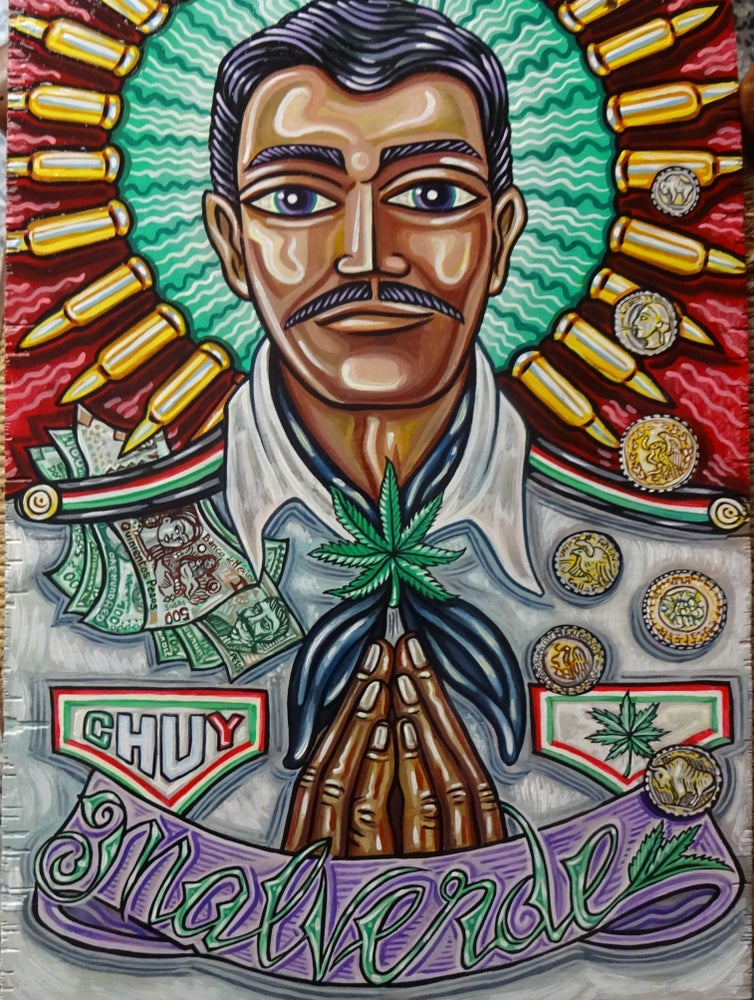
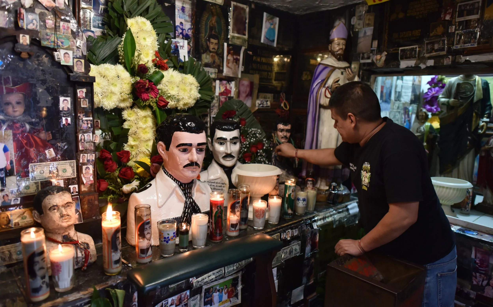

(source: https://tidal.com/browse/album/95863152)
By: Brynhildr
Jesus Malverde: The Narcos Saint
About Me:
Of all my research into Mexico rich history and culture, the story of Jesus Malverde fascinated me to know end. The Patron Saint, the saint that both people and the Narcos worship. He was known as the generous bandit and angel of the poor. Many journalist from what I saw so far called him a narco saint. He is a Mexican Robin Hood who steal from the rich and give to the poor, a modern folk hero in the community of Mexico.
Beside his Robin Hood status, what connect him to average Mexican was that his Robin Hood adventure was also a ruse to expose the corrupt dictatorship of the Mexican government that kept people under harsh rules. Some people say he is an urban legend, he does not exit, some source say he exist, whatever the case, Jesus Malverde is a fascinating character.
The Birth of a Saint:Jesus Malverde was aledge to have been born on December 24th, 1870 in northern Mexico. His real name alledgebly was called Jesús Juárez Mazo. He have a humble orgins, who parents are very poor and sick which lead to his development. Their death show him that poverty was what took his parent away, and from that moment on, he will do anything to escape poverty. He become a bandit and outlaw to steal from the rich and wealthy for the people of Sinaloa, he divide his conquest for those who are suffering in poverty. He become the most wanted thief in the region, even wanted by the state governor, Francisco Cañedo, who Malverde said was abusing the population. The Governor put a price on his head, and he was a wanted man until he die. There are some version that say that he was capture and shot by the local police, or one of his followers betray him to the police. In 1909, he was hanged from a tree and left there as a lesson of people who defied the government. The cruelty to denied him of a proper burial. Some legend stated that people started to throw rock at his bone until they were all buried. The people thought Malverde spirits would guide them in life and death for giving him a proper burial, which gave birth to a Saint.
Modern Malverde: Malverde image represent of hero who opposed power and authority to help the ordinary citizen and died for all of them. In a way, I draw comparison between him and Joan of Arc, both who become saint in their death. Some people belief Malverde is actually a compiling list of two big bandit, Heraclio Bernal and Felipe Bachomo who both contributed to helped the poor community by stealing from the wealthy. He is very similar to Jesus, even with the birth on December 24th, both Jesus and Malverde are betrayed by one of their follower, but in death both become a saint, worship by thier followers. Malverde according to main stream journalist, become association with organize crime and drug cartel because they using him as a mirrors of their own representation. They are sending a message that the illicit activity does have a good cause to benefit their communities. This is very true, especially in the state of Sinaloa where organize crime has taken good care of the community than the government itself. There are still those in need when time of crisis, the Patron Saint is always there to listen, like a wise old saint giving powerful wisdom.
Source:https://culturacolectiva.com/history/jesus-malverde-narc-saint